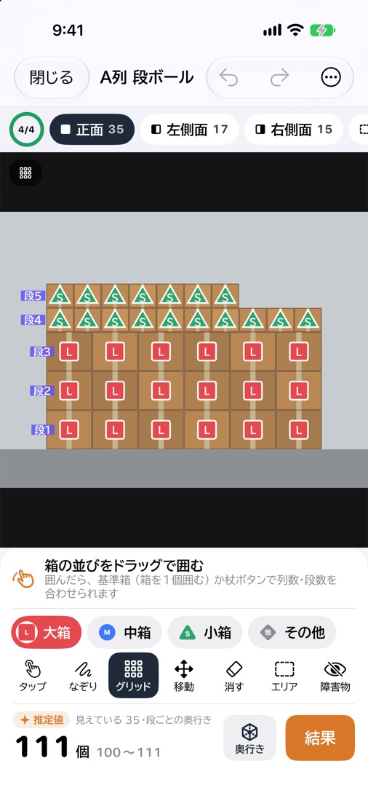
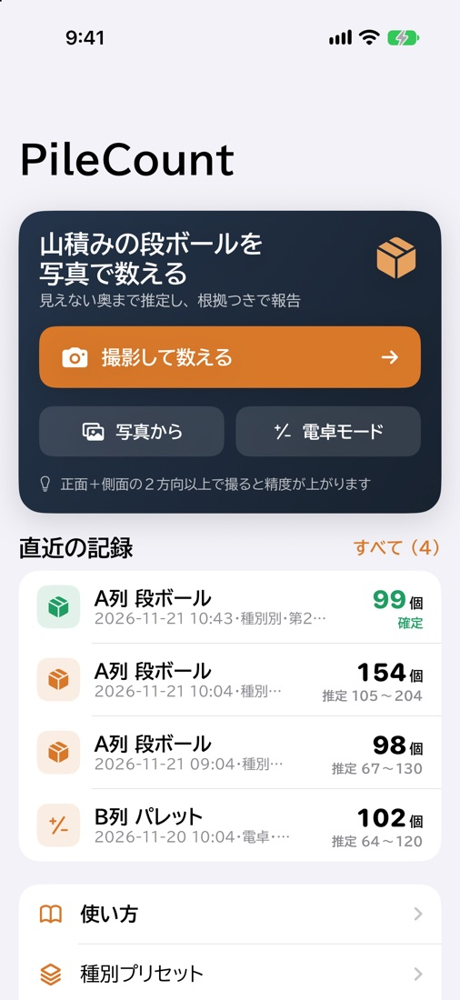
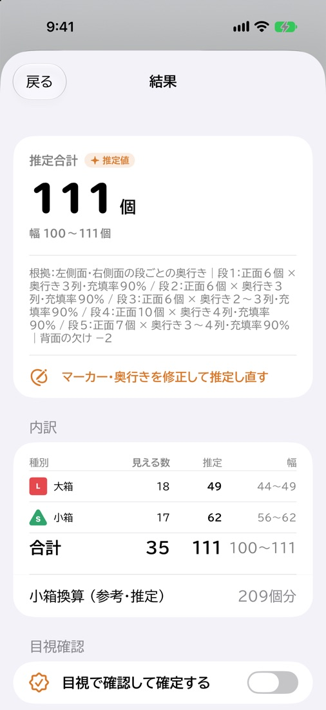

山積みの段ボールを、
写真で数える。
見えている箱は写真の上で素早くマーキング。見えない奥は側面の写真から推定。推定の根拠まで残した報告を、その場でワンタップ共有できます。
- 通信なしで数えられる
- 広告なし
- 基本機能は無料

CHALLENGES
目で数える棚卸し、こんな負担はありませんか
山積みの箱は、奥や裏が見えません。数え直しや確認の連絡が、現場の時間を少しずつ奪っています。
数えるのに時間がかかる
高く積まれた山を、段ごと・列ごとに指で追って数える。山が増えるほど、棚卸しの時間が延びていきます。
人によって数がずれる
奥行きの読み方や数え漏れで、担当者ごとに結果が変わる。どれが正しいか、もう一度数えることに。
報告の根拠が残らない
「何個あったか」だけでは、あとから確認できません。どう数えたかを書き残す手間もかかります。
HOW IT WORKS
撮って、打って、推定する。3ステップ
特別な機材は要りません。いつものiPhoneで、山の正面と側面を撮るだけです。

正面と側面を撮る
カメラで撮るか、写真から選びます。正面＋側面の2方向以上で撮ると精度が上がります。
見えている箱を打つ
タップ・なぞり・グリッドで一気に配置。基準の箱を1つ囲むと、列数と段数を自動で合わせます。

推定して、確定・報告
奥行きから見えない部分を推定し、幅と根拠つきで表示。目視の補正を足して確定し、報告を共有します。
FEATURES
現場の数え方に合わせた機能
きれいに揃った山も、崩れかけた山も。実際の積み方に合わせて数えられます。
速いマーキング
タップ・なぞり・グリッドで配置。揃い・レンガ・交互の積み方に合わせたグリッドで、数十個を一度に打てます。
見えない奥まで推定
正面・左右の側面・背面の写真に対応。段ごとの奥行きを読み取り、充填率も考えて全体を推定します。
いろいろな積み方に
パレットの1段の個数×段数、荷重で潰れた箱、ピラミッド型の山、障害物で隠れた箱の補完にも対応。
推定値と確定数を分けて記録
推定は最小〜最大の幅と根拠つき。目視で気づいた抜けや欠けを足し引きして、確定数として残せます。
報告はワンタップ
根拠つきの報告テキストをすぐコピー。Pro では PDF レポートと CSV で、社内の様式や表計算にそのまま使えます。
会社のロゴ入り報告書
Pro では報告書に自社のロゴを入れられます。取引先や本部への提出書類として、そのまま使えます。
USE CASES
こんな現場で
段ボールが積まれている場所なら、業種を問わず使えます。
倉庫・物流の棚卸し
保管エリアに積まれた在庫を、写真から短時間で数えて記録。
店舗のバックヤード
入荷した箱や在庫の山を、売場に出る前にさっと確認。
入荷・出荷の検品
納品された箱の数を、伝票と突き合わせる前に把握。
棚卸しの立会い・確認
日時・写真・根拠が残るので、あとから数え方を確かめられます。
DATA & SECURITY
現場の写真を、外に出さない
倉庫や工場の写真は、社外に出したくない情報です。PileCount は数える処理をすべて端末の中で行い、記録も端末に保存します。
通信なしで数える
数える・推定する・報告をつくる処理は、すべて端末の中。電波の届かない倉庫でも使えます。
記録は端末の中だけ
写真・マーカー・結果は端末に保存。共有するのは、あなたが「共有」を選んだときだけです。
位置情報を取り除く
共有する画像から、撮影場所などの情報（EXIF）を取り除く設定が初めから有効です。
送るかどうかは選べる
AI の改善への協力は、設定でいつでもオフに。オンでも顔はぼかし、現場名・位置情報は送りません。広告・解析ツールもありません。
PRICING
料金
数える・推定する・確定する・報告テキストをコピーする、は無料でずっと使えます。書類として残す機能は Pro で。
無料
0円
個人での試用・たまに数える方に
- 数える・推定・確定
- 根拠つきの報告テキスト
- 履歴は直近20件
- 種別プリセット6個まで
Pro 年額プラン
4,800円／年
最初の14日間無料（はじめての方）
- 無料の機能すべて
- 履歴の無制限表示
- PDF レポート・CSV の書き出し（まとめても）
- 報告書に会社のロゴ
- iCloud 同期・クラウドへの自動バックアップ
- 種別プリセット無制限
Pro 月額プラン
480円／月
繁忙期だけ使いたい方に
- 年額プランと同じ機能
- いつでも解約できます
法人でのご利用
チームでの導入、複数台での利用、業務に合わせた使い方のご相談を受け付けています。現場で試していただける企業さまも募集しています。導入のご相談はこちら
価格は税込です。Pro はApp内課金（自動更新サブスクリプション）で、期間終了の24時間前までに解約しない限り自動で更新されます。詳しくは利用規約をご覧ください。
FAQ
よくある質問
数えた数は正確ですか？
見えている箱は、打ったマーカーの数なので正確です。奥の見えない部分は、奥行き（列数）と充填率から計算した推定値で、最小〜最大の幅と根拠をあわせて表示します。正確な数が必要な場面では、目視の確認と組み合わせ、「確定数」として記録してください。
対応している端末は？
iOS 18 以降の iPhone と iPad です。LiDAR などの特別なセンサーは必要ありません。
インターネットにつながっていなくても使えますか？
はい。数える・推定する・報告をつくる機能は、すべて通信なしで動きます。「AI の改善への協力」の送信は、通信できるときにまとめて行います。
写真や記録はどこに保存されますか？
記録は端末の中です。「AI の改善への協力」がオンのときだけ、学習に使える写真（縮小し、顔をぼかし、位置情報を消したもの）と箱の位置を送ります。無料版は初めからオンで、設定でいつでもオフにでき、送ったデータも削除できます。会社の決まりで写真を社外に出せない場合はオフにしてください。
どんな積み方に対応していますか？
柱積み・レンガ積み・交互積みはグリッドで、ピンホイールなど見え方がばらばらな積み方は、パレット1段の個数×段数で数えられます。潰れた箱やピラミッド型の山、障害物で隠れた部分にも対応しています。
会社でまとめて導入できますか？
現在は、お一人ずつ App Store から入手する形です。チームでの導入や請求書でのお支払いなど、法人向けのご要望はメールでお聞かせください。